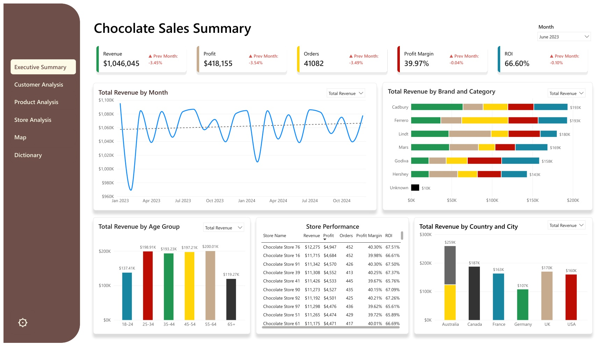
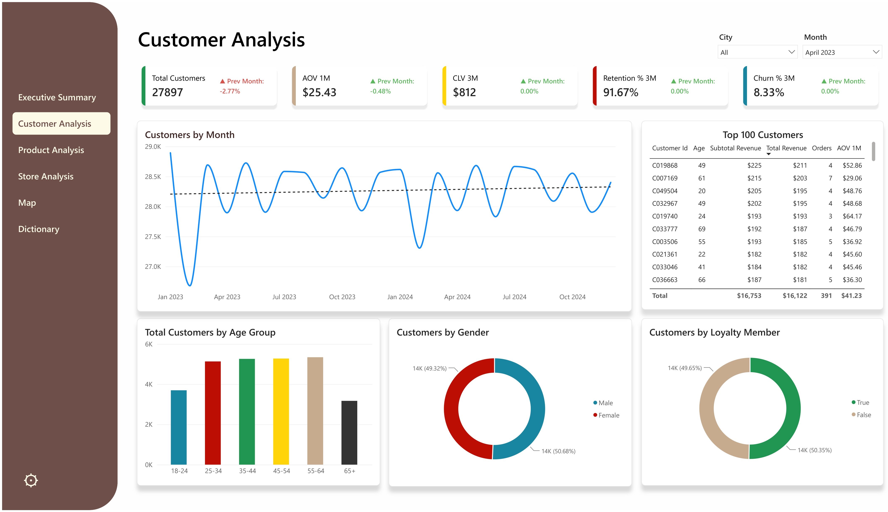
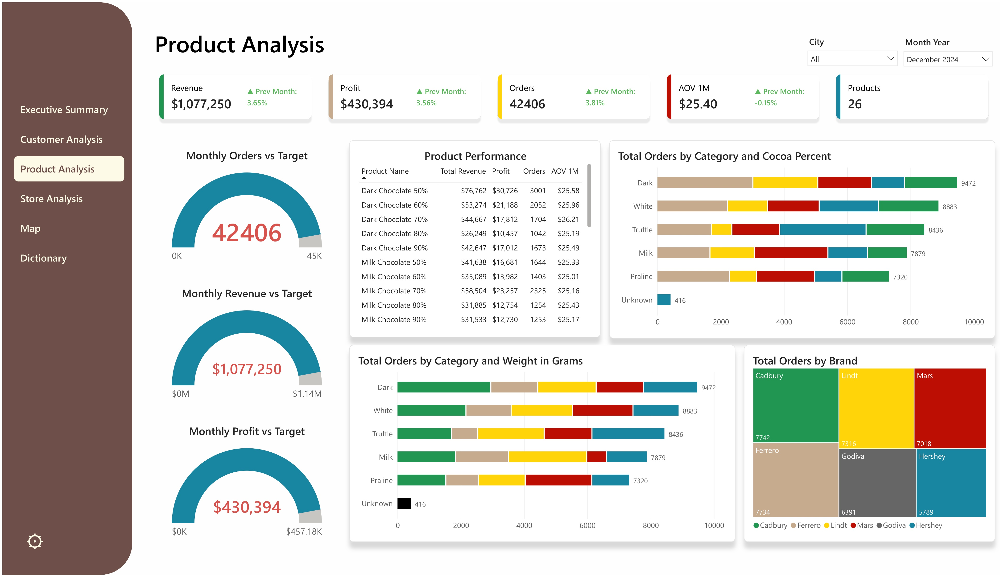
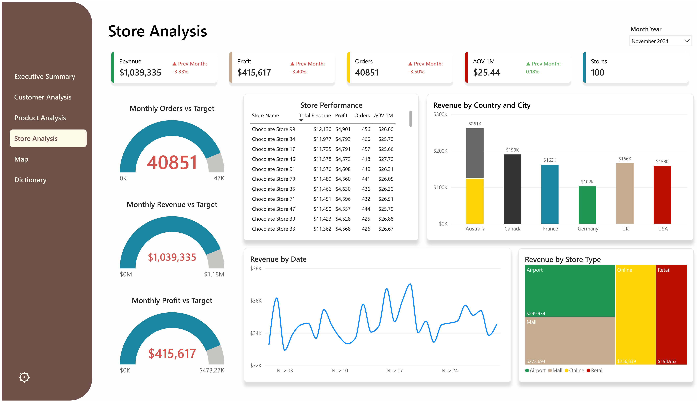
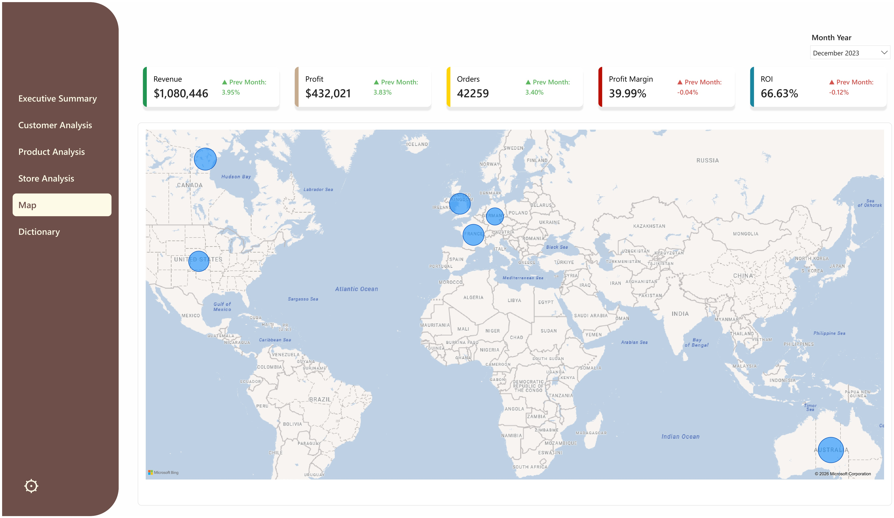

Chocolate Sales Performance Analysis
Tools: MySQL (Data Profiling, Error Logging, Cleaning & Modelling) · Power BI (Visualization)

Real-world data warehouses rarely deal with a single messy table. Instead, they deal with multiple related tables, each with its own quality issues, and a set of relationships between them that also need to stay consistent. This project simulates that scenario using a multi-table chocolate sales dataset, and builds a traceable system for detecting, logging, and resolving data quality issues before the data reaches a star schema and a Power BI dashboard.
The project includes:
- Multi-table data ingestion into MySQL
- Systematic data profiling (duplicates, inconsistencies, logical relationships, orphan records)
- A structured error logging system with an Error Catalog and Error Log
- SQL-based data cleaning, traced back to logged errors
- A dimensional star schema data model
- A multi-page Power BI dashboard for analytics and insights
The Dataset
The dataset used in this project is the Chocolate Sales Dataset (2023–2024), publicly available on Kaggle.
Dataset link:
https://www.kaggle.com/datasets/ssssws/chocolate-sales-dataset-2023-2024/data
Unlike a single flat file, this dataset is split across five related tables: customers, products, stores, calendar, and sales. Because the data spans multiple tables, it introduces issues that a single-table dataset can't, such as mismatched values between related columns, orphan foreign keys, and logical inconsistencies across tables. This makes it well suited for practicing relational data quality management.
Project Architecture
The project follows a typical data warehouse architecture with the following layers:
- Raw Layer: original tables imported from the source, kept untouched.
- Staging Layer: data profiled, logged, and cleaned to improve quality and consistency.
- Data Warehouse Layer: data modeled into a star schema, focused on analytical reporting.
- Consumption Layer: an interactive dashboard for business users.
A. Raw Layer
This layer contains the original tables imported from the source files, stored in their raw format without any transformations.
CREATE DATABASE chocolate_company;
USE chocolate_company;
-- CSV tables imported through GUI
-- Rename all imported tables as raw tables
RENAME TABLE
customers TO raw_customers,
products TO raw_products,
calendar TO raw_calendar,
stores TO raw_stores,
sales TO raw_sales;Source: Scripts/01_initialization.sql
B. Staging Layer
The staging layer is where all data quality work happens before anything reaches the warehouse. A staging table was created for each raw table, then the data was profiled, tracked through an error logging system, and cleaned, all while staying fully traceable back to the original finding.
1. Data Profiling
Each staging table was systematically checked across four categories: duplicate records, inconsistent values, logical relationships between columns, and orphan foreign keys against related tables.
Checks performed included:
- Duplicate ID and duplicate attribute checks across all five tables
- Value consistency checks per column
- Logical relationship checks (e.g. category vs. product name, city vs. country, join date vs. order date)
- Orphan record checks between
salesand its related dimension tables
Example: checking a logical relationship
-- category is supposed to match the first word of product_name
SELECT
SUBSTRING_INDEX(product_name, " ", 1) AS correct_category,
category AS false_category
FROM staging_products
WHERE SUBSTRING_INDEX(product_name, " ", 1) != category;
-- Finding: category column doesn't match the first word of product_name
-- Error Logging: see belowSource: Scripts/03_data_profiling.sql
2. Error Logging System
Rather than fixing issues on the spot, every finding from profiling was logged into a structured system: an Error Catalog, which defines each type of error, and an Error Log, which records every occurrence along with its resolution status. This keeps every issue traceable: what was wrong, where, when it was detected, and when (or if) it was resolved.
CREATE TABLE staging_error_catalog (
error_code VARCHAR(50) PRIMARY KEY,
error_name VARCHAR(50) NOT NULL UNIQUE,
error_description VARCHAR(100) NOT NULL
);
CREATE TABLE staging_error_log (
error_log_id INT PRIMARY KEY AUTO_INCREMENT,
table_name VARCHAR(50) NOT NULL,
record_id VARCHAR(50) NOT NULL,
error_code VARCHAR(50) NOT NULL,
error_status VARCHAR(15) NOT NULL DEFAULT "UNSOLVED",
detected_at DATETIME NOT NULL DEFAULT CURRENT_TIMESTAMP,
resolved_at DATETIME NULL,
resolution_note VARCHAR(100) NULL,
UNIQUE KEY uq_error_log (table_name, record_id, error_code),
CONSTRAINT fk_log_error_code FOREIGN KEY (error_code) REFERENCES staging_error_catalog(error_code)
);
-- Example: logging the category mismatch found during profiling
INSERT INTO staging_error_catalog (error_code, error_name, error_description)
VALUES ("ERR_CAT_MISMATCH", "Category Mismatch", "Category value does not match the first word of product_name in staging_products");
INSERT INTO staging_error_log (table_name, record_id, error_code)
SELECT "staging_products", product_id, "ERR_CAT_MISMATCH"
FROM staging_products
WHERE SUBSTRING_INDEX(product_name, " ", 1) != category;Source: Scripts/04_error_logging.sql
Not every issue found during profiling was treated as an error to fix. Some findings, such as customers sharing identical demographic profiles or products sharing identical attributes under different IDs, were reviewed and deliberately accepted as-is, since there wasn't enough evidence to confirm they were true duplicates rather than legitimate separate records.
3. Data Cleaning
Each logged error was resolved directly against its root cause, then marked as SOLVED in the Error Log, closing the loop between detection and resolution.
-- Correct the category mismatch found and logged earlier
UPDATE staging_products
SET category = SUBSTRING_INDEX(product_name, " ", 1)
WHERE SUBSTRING_INDEX(product_name, " ", 1) != category;
-- Update the error status once resolved
UPDATE staging_error_log
SET
error_status = "SOLVED",
resolved_at = CURRENT_TIMESTAMP
WHERE
error_code = "ERR_CAT_MISMATCH" AND
error_status = "UNSOLVED";Source: Scripts/05_data_cleaning.sql
Two issues found during profiling couldn't be resolved through cleaning: transactions with an order date earlier than the customer's join date, and a small number of orphan product_id values in the sales table with no matching product. These were kept logged as UNSOLVED, and carried forward into the warehouse layer with a flag instead of being silently dropped.
C. Data Warehouse Layer
The cleaned staging data was restructured into a star schema, which simplifies joins and improves query performance for analytical reporting.
The warehouse consists of:
Dimension Tables
dim_customersdim_productsdim_storesdim_calendar
Fact Table
fact_sales
The fact table stores measurable events, with one row per order, while dimension tables store descriptive attributes such as customer demographics, product details, and store location.
CREATE TABLE fact_sales (
order_id VARCHAR(20) PRIMARY KEY,
order_date DATE NOT NULL,
product_id VARCHAR(20) NOT NULL,
store_id VARCHAR(20) NOT NULL,
customer_id VARCHAR(20) NOT NULL,
quantity SMALLINT NOT NULL,
unit_price DECIMAL(10,2) NOT NULL,
discount DECIMAL(10,2) NOT NULL,
revenue DECIMAL(10,2) NOT NULL,
cost DECIMAL(10,2) NOT NULL,
profit DECIMAL(10,2) NOT NULL,
CONSTRAINT fk_fact_sales_calendar FOREIGN KEY (order_date) REFERENCES dim_calendar (date),
CONSTRAINT fk_fact_sales_product FOREIGN KEY (product_id) REFERENCES dim_products (product_id),
CONSTRAINT fk_fact_sales_store FOREIGN KEY (store_id) REFERENCES dim_stores (store_id),
CONSTRAINT fk_fact_sales_customer FOREIGN KEY (customer_id) REFERENCES dim_customers (customer_id)
);
-- Orphan product_id values are mapped to a placeholder product
-- instead of being excluded from the fact table
INSERT INTO fact_sales (order_id, order_date, product_id, store_id, customer_id, quantity, unit_price, discount, revenue, cost, profit)
SELECT
s.order_id, s.order_date,
COALESCE(p.product_id, "Orphan Product"),
s.store_id, s.customer_id, s.quantity,
s.unit_price, s.discount, s.revenue, s.cost, s.profit
FROM staging_sales s
LEFT JOIN dim_products p ON s.product_id = p.product_id;Source: Scripts/06_data_transformation.sql
Records tied to unresolved errors, such as orphan products and orders placed before a customer's join date, were kept in fact_sales and flagged with boolean columns (is_orphan_product, is_invalid_order_date), so they could still be included in revenue and order metrics while remaining identifiable for further review.
D. Consumption Layer
The star schema was connected to Power BI to build a multi-page dashboard covering executive reporting, customer analytics, product performance, and store performance.
The dashboard includes:
- Executive Summary: revenue, profit, orders, profit margin, and ROI trends
- Customer Analysis: AOV, CLV, retention and churn rate, customer segments
- Product Analysis: performance by product, category, cocoa percentage, and brand
- Store Analysis: performance by store, country, and store type
- Map: geographic distribution of store performance
- Dictionary: a data dictionary page documenting every field for end users




Key insights:
- Dark Chocolate 50% was the top-selling product by revenue, generating over $76,000 in a single month
- Airport stores generated the highest revenue among all store types, ahead of Mall, Online, and Retail
- Australia led total revenue by country, followed by Canada and the UK
- The customer base was nearly evenly split between loyalty and non-loyalty members, and between male and female customers
- Customers aged 45 to 64 generated the highest revenue across all age groups
View the Full Project
The complete project, including all SQL scripts and the Power BI file, is available on GitHub.